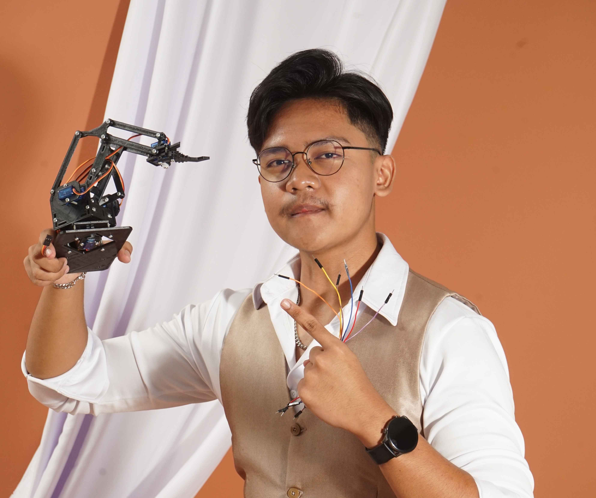

|
 |
Dimas Akhmad NuragungIoT Engineer / Embedded Systems Developer
Email: dimasakhmaddn@gmail.com |
Internet of Things (IoT) yang berdedikasi dan inovatif dengan pengalaman luas dalam merancang sistem tertanam, integrasi perangkat keras, serta pengembangan sistem pemantauan berbasis real-time. Memiliki keahlian dalam pemrograman C++, perangkat keras, ESP8266, serta aktif berpengalaman dalam moderasi komunitas online dan platform edukasi.
Proyek Utama | Berkelanjutan
Brainly | Pengalaman +- 2 tahun
Informatika | Sep 2025 - Okt 2029
Ilmu Pengetahuan Alam | Jul 2022 - May 2025